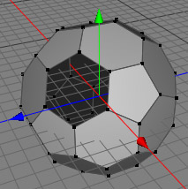

穴を塞ぐ ツール
穴を塞ぐ ツールは新たなポリゴンを作る事が出来るツール類に属します。穴をふさぐ際はポリゴンの作成ツール を使い時間をかけて作業することも出来ますが穴の境界線の一つのポイントを選択し穴を塞ぐ ツールを使えば時間の節約が出来ます。Cheetah3Dが穴塞ぎ作業の続きを行います。
モード
穴を塞ぐ ツールはポリゴンモードでポイントやエッジに対し使うことが出来ます。また、穴を塞ぐ ツールは編集中のポリゴンに使用できます。


あなたは既に穴をもつポリゴンオブジェクトを作っていると仮定します。（下図の左のように）穴を塞ぐために穴を塞ぐ ツールを選択し穴の輪郭の一つのポイントをクリックしてください。Cheetah3Dは自動で穴の輪郭を見つけてポリゴンで穴を塞ぎます。（右の図です）
 
キー
-
- 無し
プロパティー
- 無し